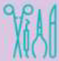
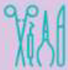

VETERINARIA MIS
4 PATAS
Emergencia las 24 horas
Unidad de video Endoscopia Diagnostica y Terapéutica
Somos los pioneros con mas de 12 años de experiencia ofreciendo el servicio de endoscopia diagnostica y terapéutica para caninos, felinos y animales silvestres.
 Unidad de Cirugia de Minima Invansion Laparoscopia
Ofrecemos el servicio de Cirugia de Minima Invasión Laparoscopia, a través de un staff de Médicos altamente calificados, infraestructura y equipamientos de ultima generación.
Unidad de Medicina Reproductiva y Banco de Semen
Contamos con los ultimos protocolos diagnósticos y terapéuticos para el manejo de las enfermedades que afectan el sistema reproductor de nuestras mascotas y desde hace dos años, venimos ofreciendo el servicio de congelamiento de semen, bajo los protocolos de CLONE USA.
Somos los pioneros con mas de 12 años de experiencia ofreciendo el servicio de endoscopia diagnostica y terapéutica para caninos, felinos y animales silvestres.
 Unidad de Cirugia de Minima Invansion Laparoscopia
Ofrecemos el servicio de Cirugia de Minima Invasión Laparoscopia, a través de un staff de Médicos altamente calificados, infraestructura y equipamientos de ultima generación.
Unidad de Medicina Reproductiva y Banco de Semen
Contamos con los ultimos protocolos diagnósticos y terapéuticos para el manejo de las enfermedades que afectan el sistema reproductor de nuestras mascotas y desde hace dos años, venimos ofreciendo el servicio de congelamiento de semen, bajo los protocolos de CLONE USA.